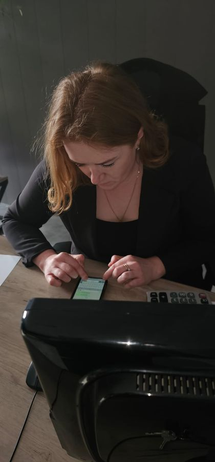

Сүт-тауар фермаларына арналған жабдықтың отандық өндірушісі
«EFIM FARM TECHNOLOGIES» ЖШС — 2017 жылдан бері Қазақстан Республикасында мал шаруашылығы жабдықтарын өндіру және жеткізу саласында.
«EFIM FARM TECHNOLOGIES» ЖШС 2017 жылдан бері Қазақстан Республикасының аумағында мал шаруашылығына арналған жабдықтарды өндіру және жеткізу саласында қызмет етеді. Компания сүт-тауар фермаларын кешенді жабдықтауға маманданған және еліміздің барлық өңірлерінде жобаларды жүзеге асырады.
Кәсіпорынның өндірістік базасы Қазақстанда орналасқан және заманауи металл өңдеу жабдықтарымен жарақталған 3000 шаршы метрден астам өндірістік алаңды қамтиды. Компанияда 40 маман жұмыс істейді, меншікті сервистік және логистикалық қызмет бар, өндірістік процестерді бақылау жүйесі енгізілген.
Біз не өндіреміз
Қызметтің негізгі бағыты — ірі қара малды ұстауға арналған жабдық өндірісі. Компанияның ассортиментінде 100-ден астам өнім атауы бар: қора жабдықтары, сауу залдарының қаңқалары, азық үстелдерінің қоршаулары, жылытылатын суаттар, хэдлоктар, скреперлік жүйелер, ветеринарлық станоктар, бұзауларды ұстауға арналған жабдықтар және т.б.
Локализация
Отандық агроөнеркәсіптік кешенді дамыту және импортты алмастыру саясаты аясында «EFIM FARM TECHNOLOGIES» ЖШС 2024–2027 жылдары FARESIN, EISELE және DAIRYMASTER жабдықтарының өндірісін локализациялау бағдарламасын жүзеге асыруда. Бүгінгі таңда локализация деңгейі 30%-ға жетіп, металл құрылымдарын өндіруді, жекелеген тораптарды дайындауды және жабдықты Қазақстандағы пайдалану жағдайларына бейімдеуді қамтиды.
Сервис
Компания сервис сапасы мен техникалық сүйемелдеуге ерекше назар аударады. Клиенттерге толық кепілдік және кепілдіктен кейінгі қызмет көрсетіледі, қосалқы бөлшектердің болуы және жабдықты пайдаланудың барлық кезеңдерінде техникалық қолдау қамтамасыз етіледі.
Нәтижелер
2017 жылдан бері «EFIM FARM TECHNOLOGIES» ЖШС сүт-тауар фермаларын жабдықтау бойынша 200-ден астам жобаны жүзеге асырды. Жеткізілген жабдықтың жалпы көлемі 45 млрд теңгеден асты. Компания жобалары Қазақстанның барлық облыстарында сәтті іске асырылды.
Бүгінде «EFIM FARM TECHNOLOGIES» ЖШС Қазақстан Республикасының агроөнеркәсіптік кешенін дамытуға, жұмыс орындарын құруға және ауыл шаруашылығына заманауи технологияларды енгізуге үлес қосып жүрген мал шаруашылығы жабдықтарының отандық өндірушілерінің бірі болып табылады.
Біз қалай жұмыс істейміз



Фермаға жабдық керек пе?
Мал басыңызға сай шешім таңдап, коммерциялық ұсыныс жібереміз.